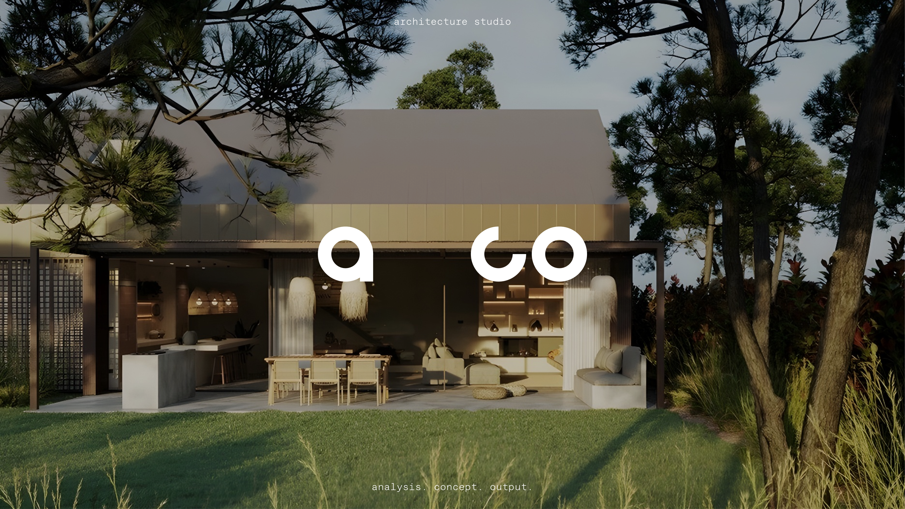
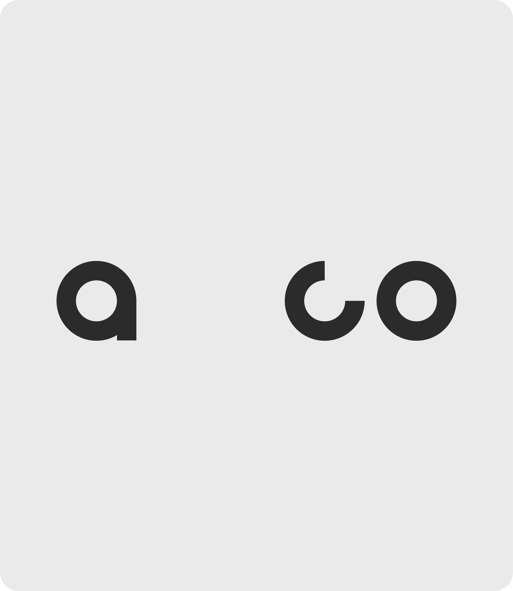
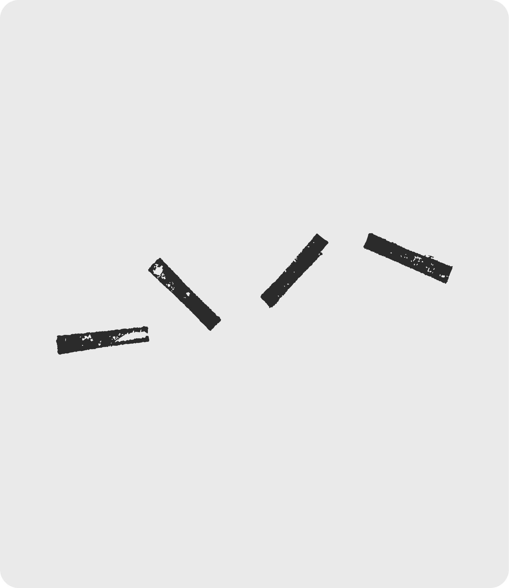
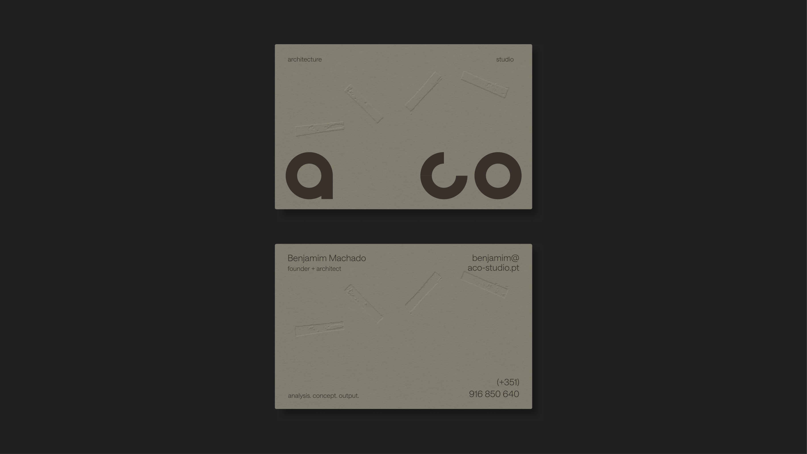
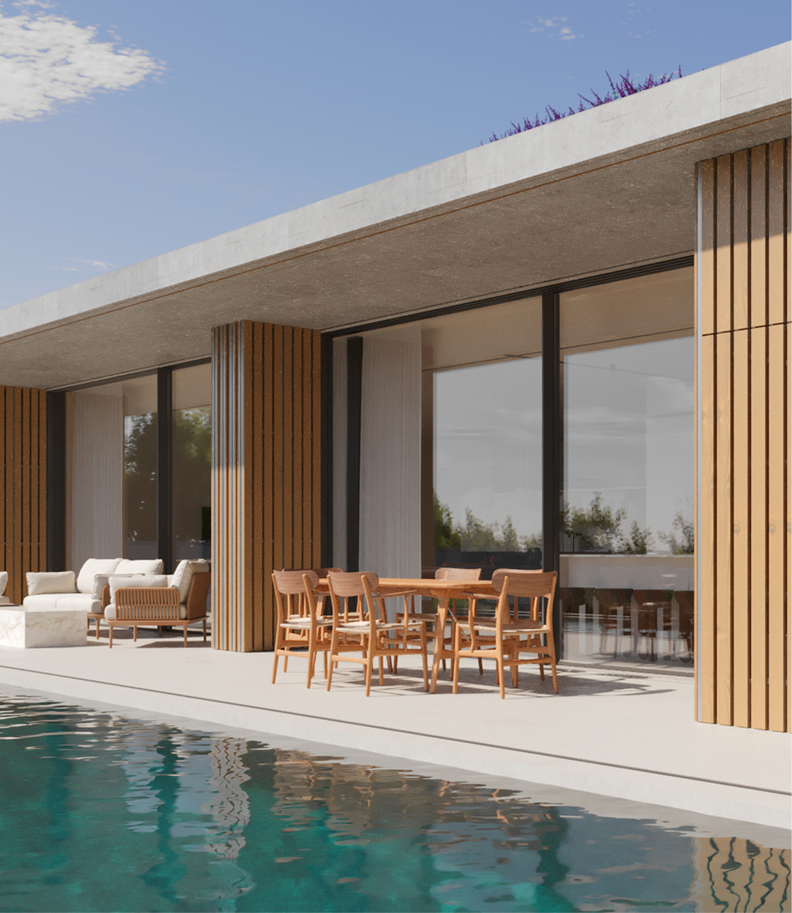
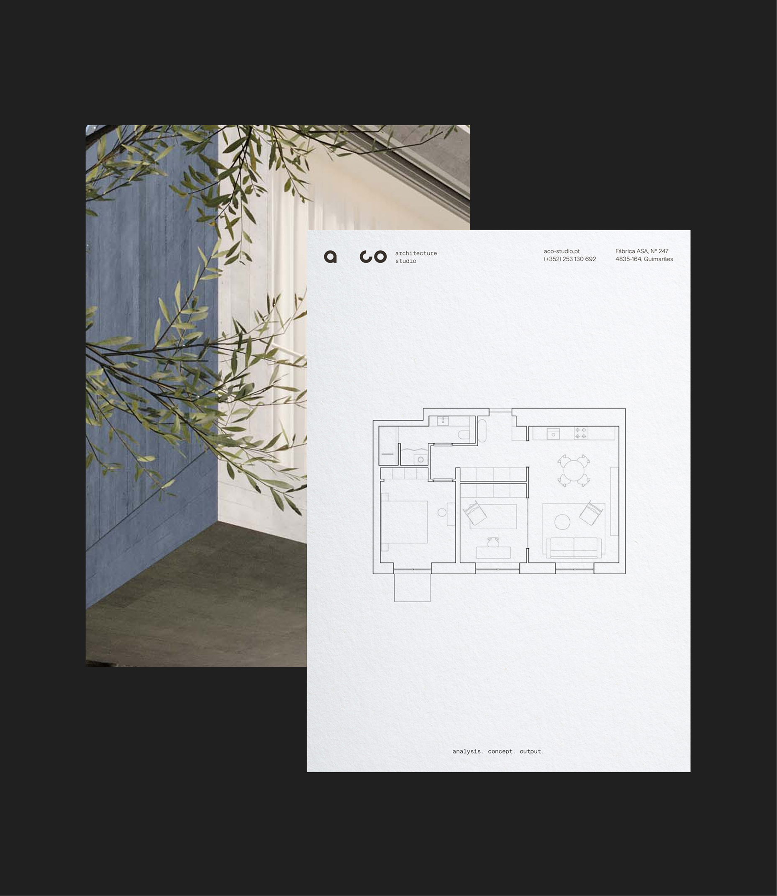
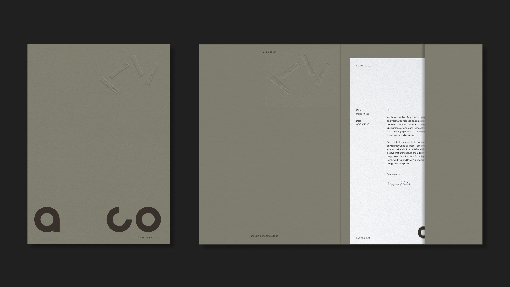
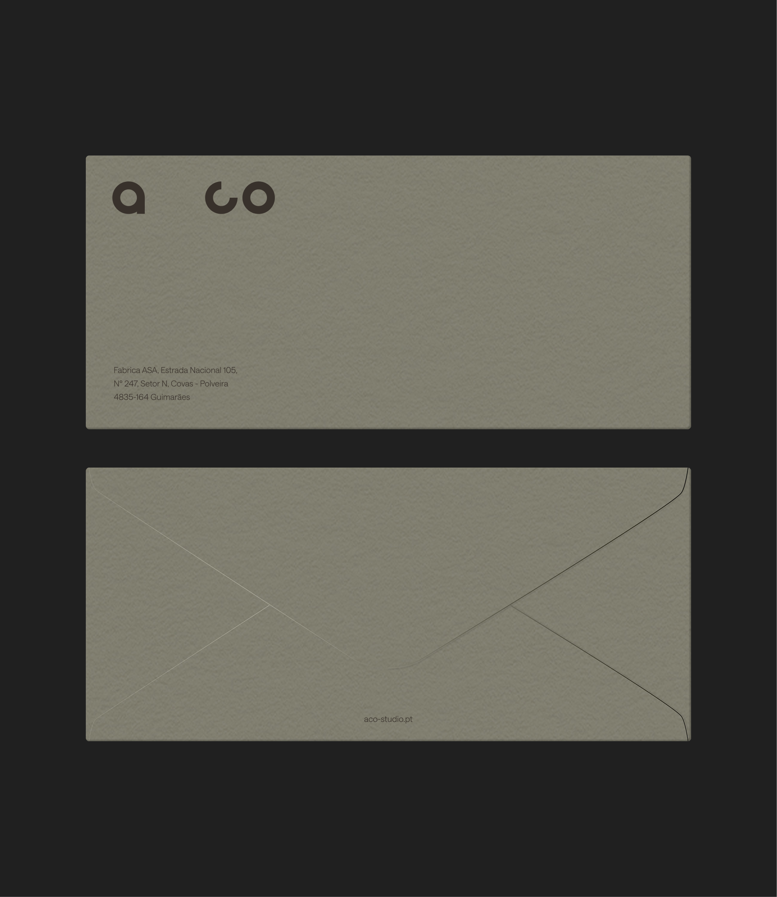
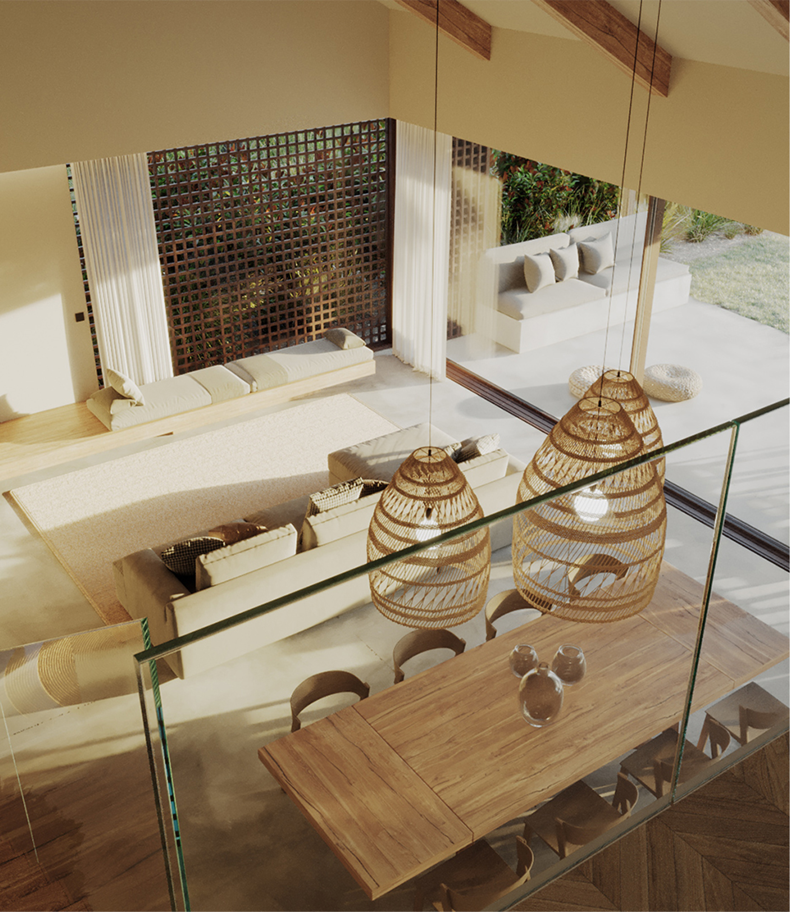
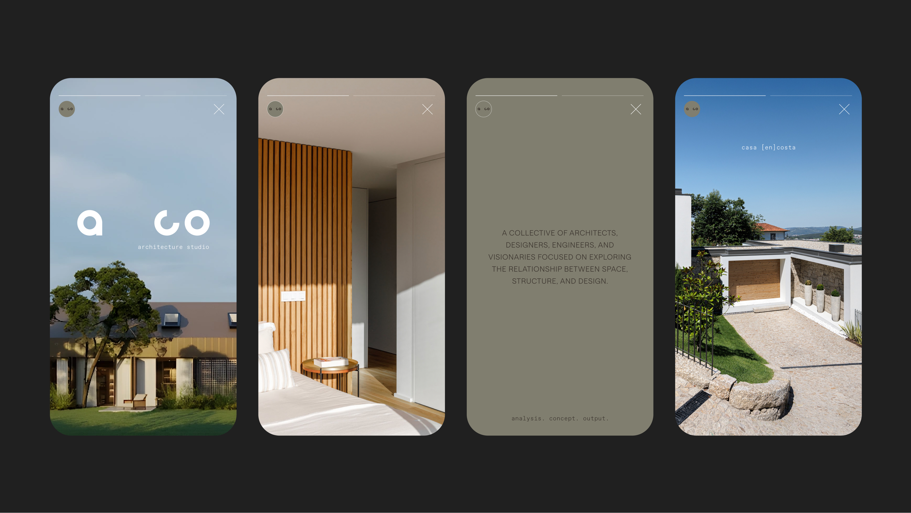

Formerly known as Hous3, aco is the result of a renaming and rebranding project that reflects the studio’s evolved design philosophy. This new brand identity signals a commitment to a deeper analysis, a strong conceptual thinking, and purposeful design outcomes.
The rebranding of aco is rooted in a process that begins with intent — understanding context, identifying needs, and shaping a clear conceptual vision. From this foundation, each output is crafted to not only define space but to curate experiences that are thoughtful, flexible, and unmistakably contemporary.
At its core, aco sees architecture as more than the creation of space — it’s about shaping how people experience and interact with their environment, with clarity, purpose, and refinement.



The logo is built from simple geometric forms, each representing a stage in the architectural process: Analysis, Concept, Output. The varying spacing between the shapes reflects rhythm, transition, and tension — echoing how space is experienced, adjusted, and felt in architecture. It’s a visual metaphor for structure in motion, grounded yet evolving.
The four kinetic rectangles embody the studio’s approach to each project as a responsive analysis of the client, the context, and the evolving pace of contemporary life. Each rectangle serves as a modular expression of adaptability, avoiding a fixed composition and allowing for continual reconfiguration. Together, they form a system that is dynamic, layered, and perpetually in motion — mirroring the environments that are shaped into each client’s needs.






